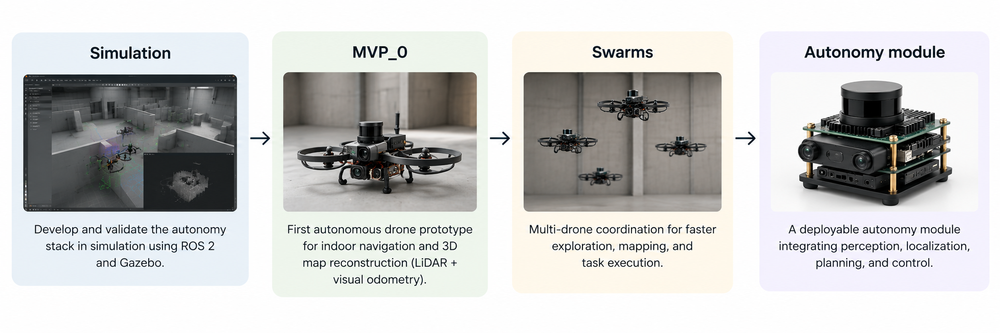

Draupnir
Draupnir enables autonomous drones to navigate GPS-denied indoor environments while reconstructing detailed 3D maps in real time. By combining onboard perception, localization, and intelligent path planning, our technology allows drones to explore, understand, and operate in complex spaces without external infrastructure.
Our Stack
Our autonomy stack is built on ROS 2 and developed and validated in Gazebo before deployment on real platforms.
Draupnir combines LiDAR and visual odometry for robust localization and 3D reconstruction, while frontier-based exploration allows the drone to autonomously identify unexplored regions, plan its next movement, and progressively map complex indoor environments.
Roadmap
Our roadmap starts in simulation, where the autonomy stack is developed and validated using ROS 2 and Gazebo. The next step is MVP_0, a first physical prototype capable of autonomous indoor navigation and 3D map reconstruction using LiDAR and visual odometry. From there, we aim to extend the system toward multi-drone swarms, enabling coordinated exploration and mapping. The final objective is a compact autonomy module that integrates perception, localization, planning, and control into a deployable system that can be adapted to different drone platforms.

Team
Alessandro Miragliotta is a Software Engineer with an Msc in Computer Engineering, he developed his thesis on Drone embedded security at Purdue University. Ex-Leonardo Helicopters engineer and Ex-Qualcomm intern.
Fabio Fraschetti is a Doctoral Student in Applied Mathematics, he holds an Msc in Computer Engineering, he developed his thesis at UCL-London. His interests are in Machine Learning, Control Theory and Game Theory.
Alessandro Miragliotta
Founder

Fabio Fraschetti
Co-Founder